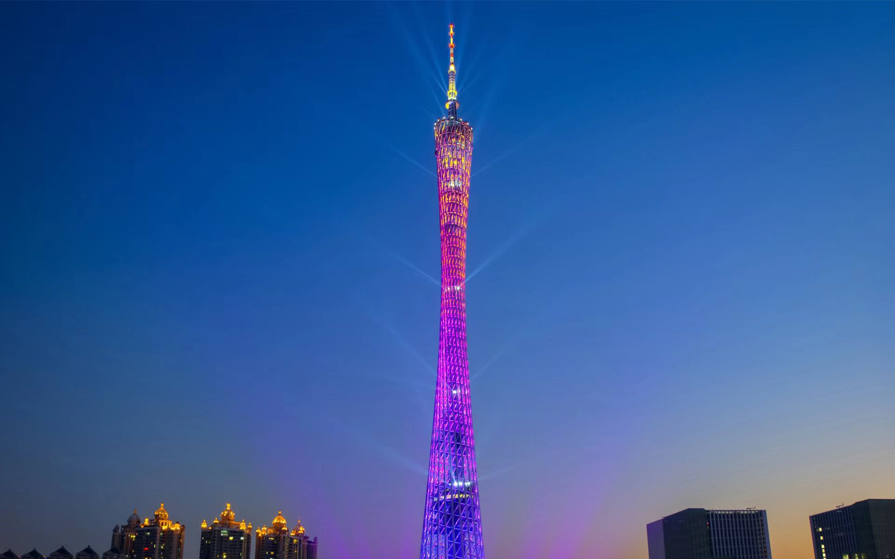

广州塔（英语：Canton Tower）又称广州新电视塔，位于中国广东省广州市海珠区（艺洲岛）赤岗塔附近。被誉为广州新地标的广州塔，以其独特的魅力，如一把明亮的炬火，矗立在珠江之畔，照亮了这座繁华的城市。广州塔高600米，是中国第一高塔，世界第三高塔。独特的旋转体设计，使其极具现代和时尚感。白天，广州塔在蓝天的映衬下，更显其挺拔和高雅。夜晚，广州塔亮起璀璨的灯光，如同一颗明亮的星星，点亮了广州的夜空。无论是浓浓的日光还是柔和的月色，广州塔都以其坚韧和美丽，成为了广州的骄傲。广州塔不仅是广州的象征，也是广州人民的骄傲。它见证了广州的发展与变迁，也见证了广州人民的奋斗与拼搏。
广州塔
- 